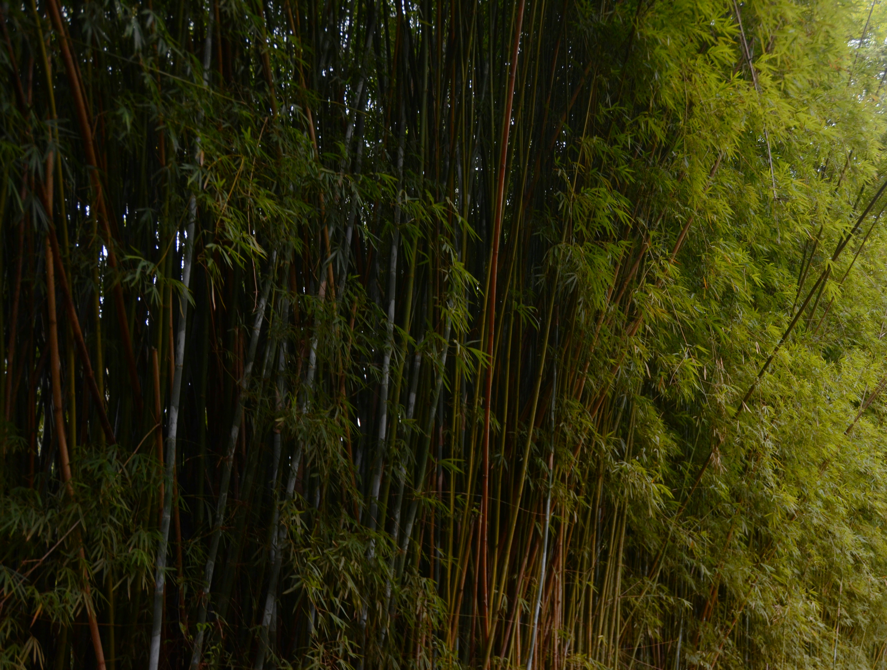

Colombia es uno de los pocos países megadiversos del mundo, se estima que en el país podrían existir entre
200.000 y 900.000 especies (Arbeláez-Cortés, 2013). Teniendo en cuenta la cantidad de especies de flora y
fauna que posee el territorio, es increíble pensar que existen 288 especies exóticas de flora y que, de
estas, sólo 4 son consideradas como invasoras de acuerdo con el Catálogo de la Biodiversidad de Colombia a
cargo del Sistema de información sobre Biodiversidad de Colombia – (SiB, 2022). También existen otras
corporaciones como la Corporación Autónoma Regional de Cundinamarca – CAR, la cual indica que solo en el
territorio de Cundinamarca existen 51 especies de plantas invasoras registradas (Barrera-Cataño, 2015).

El bambu es una de las especies existentes en Colombia que no es originaria de la región, importada
principalmente por su valor económico.
Consecuencias de las plantas invasoras
Cambios en el suelo
Aunque la siembra de plantas no nativas en áreas geográficas nuevas es una práctica muy común en proyectos
agrícolas, forestales o de jardinería; se ha evidenciado durante los últimos años que estas suelen
extenderse fuera de los límites en los cuales fueron introducidas, lo que provoca el desplazamiento de las
especies nativas. Este tipo de plantas son consideradas como invasoras. Por otro lado, al no tener enemigos
naturales, este tipo de vegetación desarrolla mejores mecanismos de defensa y rasgos
funcionales.(Rodriguez-Echeverria et al. 2007, Domínguez et al. 2009; Martínez y Pugnaire 2009; De la Peña
2009)
Las plantas modifican el suelo a nivel físico y químico, lo que contribuye al aumento de la población de la
especie exótica y facilita el desplazamiento de plantas locales creando áreas con poblaciones
monoespecíficas dominantes.
Efectos químicos de las plantas invasoras
Las plantas invasoras son capaces de alterar de manera drástica el área que habitan y cambiar elementos
como: el ciclo de nutrientes, la hidrología, el balance de energía del ecosistema en el cual residen.
Además, pueden disminuir la abundancia de otras especies o erradicarlas por completo y provocar desastres
como inundaciones o propagar el fuego con mayor rapidez y facilidad.
(Mack-Simberloff-Lonsdale-Evans-Clout-Bazzaz, 2000)
Comportamientos de las plantas invasoras
Su comportamiento se encuentra relacionado con varios factores como su especie o las características
individuales de la planta. Sin embargo, se evidencia una tasa alta de reproducción y su tolerancia a cambios
en las condiciones del suelo, también se destacan por su competitividad por el territorio con otras plantas
del área. (Batten et al. 2008; Jordan et al. 2008; Reinhart y Callaway 2006).